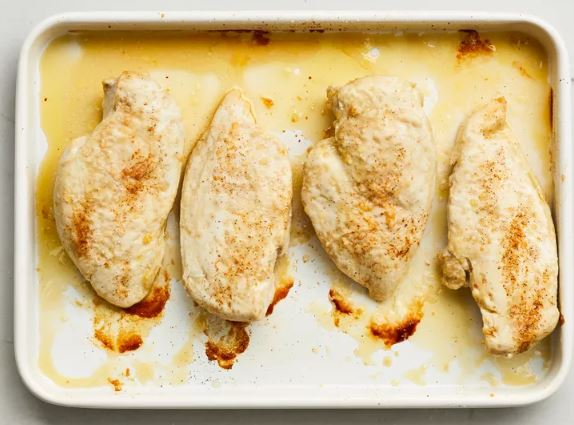

Cooking a chicken breast to perfection is all about achieving a delicate balance between tenderness and flavor. Begin by seasoning the chicken breast generously with salt, pepper, and any preferred herbs or spices for added depth. Heat a skillet over medium-high heat, adding a touch of oil for a crispy sear. Once the oil shimmers, carefully place the chicken breast in the pan, skin-side down if it has skin. Allow it to sizzle and develop a golden-brown crust for about 3-4 minutes, then flip it over. Continue cooking until the internal temperature reaches 165°F (74°C) and the juices run clear, typically taking another 6-8 minutes. Remember to let the chicken rest for a few minutes before slicing to preserve its juices and ensure a moist, flavorful result. Whether served with a simple pan sauce or atop a fresh salad, a perfectly cooked chicken breast is a versatile and delightful addition to any meal.